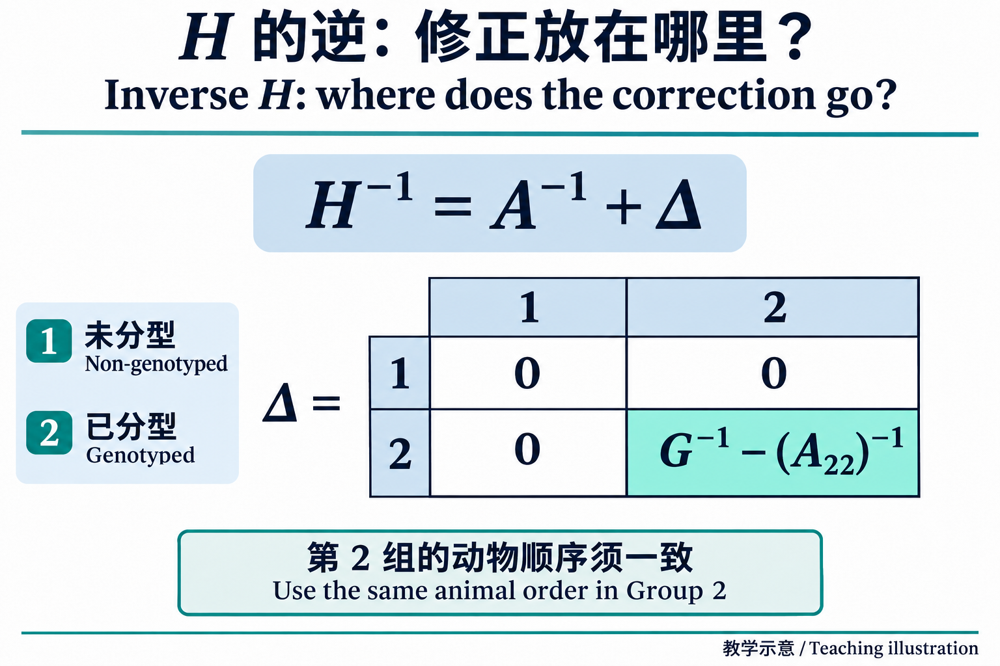

08-1｜单步关系矩阵 H / The single-step relationship matrix H
目录 / Contents · 返回主文 / Main chapter
看到 H 的逆矩阵时，我先对齐已分型动物的身份，再检查修正项到底只加到哪一个矩阵块。
When reading inverse H, I align the genotyped animal IDs first, then check exactly which matrix block receives the correction.
原阅读是 UGA 单步关系公式，本次未能直接读取，实际依据为 Masuda 单步教程。
The original reading is the UGA single-step equations, which could not be retrieved directly, so the retrieved reference is Masuda’s single-step tutorial.
本篇于 2026-10-18 核对来源，来源要点采用概括，教学数据与演算均为自拟。
Sources were checked on 2026-10-18, source points are summarized, and teaching data and calculations are original.
我想弄懂的事｜只有一部分猪分型，怎样与未分型猪一起评估？
What I want to understand | How are genotyped and non-genotyped pigs evaluated together?
01 · 已读替代来源的要点 / Points from the retrieved alternative
作者教程使用“single-step genomic BLUP”，把系谱、表型和部分动物基因型放入同一模型。
The author tutorial uses “single-step genomic BLUP” to combine pedigrees, phenotypes, and genotypes for some animals in one model.
它说明 H 的逆如何由 A、G 和已分型子集构成，下面用原创矩阵逐项解释。
It explains the construction of the inverse of H from A, G, and the genotyped subset, unpacked below with original matrices.
02 · 先统一动物顺序 / Align animal ordering first
令第 1 组为未分型动物，第 2 组为已分型动物，把 A 按这两组拆成四块。
Let Group 1 contain non-genotyped animals and Group 2 genotyped animals, partitioning A into four blocks.
只包含已分型动物，但它来自完整系谱关系，而不只是已分型动物之间能看到的父母表。
contains only genotyped animals but derives from the full pedigree relationships rather than only parentage visible within the genotyped subset.
G 也必须采用第 2 组的同一动物顺序，否则数值正确但身份错位仍会出错。
G must use exactly the same animal order as Group 2, or correct numbers attached to wrong identities still produce errors.
03 · H 逆的公式 / The inverse-H equation
这个结构保留全群系谱框架，再在分型子集加入基因组与原系谱信息之间的修正。
This structure retains the whole-population pedigree framework and adds a correction between genomic and pedigree information in the genotyped subset.
减去 是为了在这一协方差构造中替换相应信息，而不是把同一系谱关系再完整加一遍。
Subtracting replaces the corresponding information in this covariance construction rather than adding the same pedigree relationships again.
公式中的逆是矩阵逆，不能把每个元素分别取倒数。
The inverses are matrix inverses, not reciprocals of individual entries.

图 08-1A 在 中，修正矩阵 的三个块为零，右下角已分型动物块为 。
Figure 08-1A In , three blocks of are zero and the lower-right block for genotyped animals is .
计算这个块时， 和 的动物顺序必须一致，并分别做矩阵求逆。
To compute this block, put and in the same animal order and invert each as a matrix.
04 · 一个三动物数值例子 / A three-animal numerical example
沿用父母 S、D 与子代 C 的 A，但假设只有 D、C 分型，顺序为 S｜D、C。
Use the A matrix for parents S and D and offspring C, assuming only D and C are genotyped, ordered S | D, C.
从 A 抽取 D、C 的行列，再求逆得到下式。
Selecting the D and C rows and columns of A and then inverting gives the following.
这与 的右下块 不同，说明“先取子矩阵再求逆”不等于“先求逆再取子矩阵”。
This differs from the lower-right block of , showing that subsetting before inversion differs from subsetting after inversion.
再人为给出一个用于演算的兼容尺度正定 G，不把它当作真实 SNP 估计。
Now specify a positive-definite G on a compatible illustrative scale for calculation rather than claiming an actual SNP estimate.
将修正加入 D、C 的位置，得到完整三动物矩阵。
Adding the correction in the D and C positions gives the full three-animal matrix.
修正矩阵的对角元为负不表示负遗传方差，因为它是两个逆矩阵之差，并不是独立的协方差矩阵。
Negative diagonal entries in the correction do not imply negative genetic variance because this is a difference of inverses, not a standalone covariance matrix.
05 · 实际 G 为什么需要标定与稳定化 / Why G needs tuning and stabilization
G 依赖标记编码、等位基因频率与参考群体，A 则依赖系谱基础假设，两者尺度不能只凭名字默认一致。
G depends on marker coding, allele frequencies, and reference population, while A depends on pedigree-base assumptions, so matching scales cannot be assumed from their names.
标定或调和调整参考水平与尺度，稳定化帮助处理矩阵近奇异等数值问题。
Tuning adjusts reference level and scale, while stabilization helps address numerical problems such as near-singular matrices.
奇异表示矩阵不存在通常意义的逆，小型示例或高度重复的基因型都可能暴露这种问题。
Singular means a matrix lacks an ordinary inverse, which can occur in tiny examples or highly redundant genotypes.
具体调和、混合和权重必须依据软件版本与评估设计，不把本篇 G 直接当作生产设置。
Actual tuning, blending, and weighting depend on software version and evaluation design, and this example G is not a production setting.